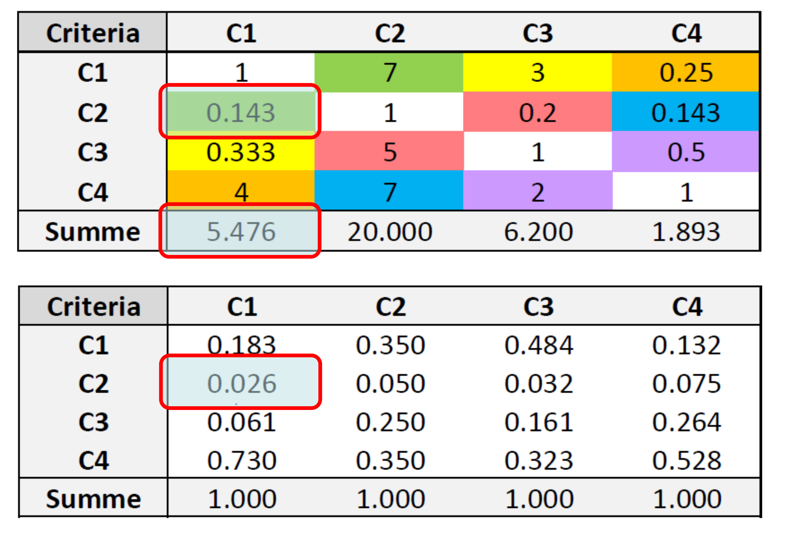
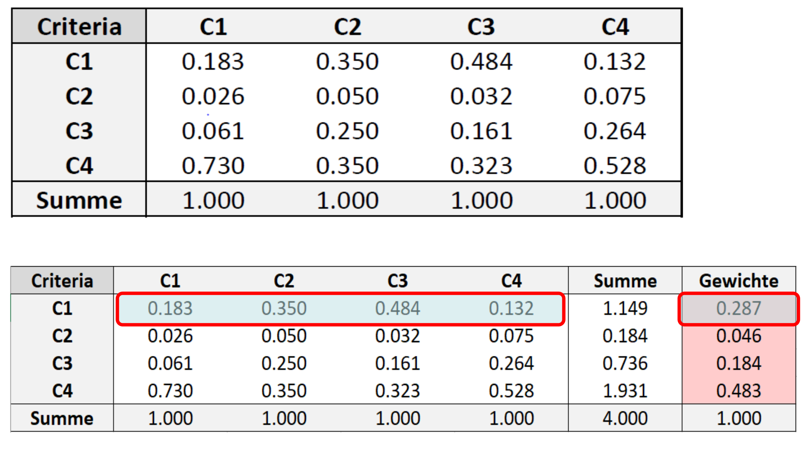
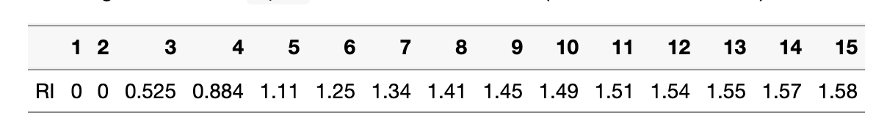

Rauman 4: Übung A
Nachdem Sie nun die Theorie kennengelernt haben, werden Sie ein konkretes Beispiel für einen Analytischen Hierarchieprozess (AHP) durchführen. Dies ist ein manueller Ansatz, um Ihnen die Grundlagen eines AHP zu zeigen. Wenn Sie einen komplexeren AHP erstellen möchten, können Sie spezielle R AHP-Pakete verwenden, wie zum Beispiel ahpsurvey package.
Übung 1: Definieren Sie die Ausgangssituation
Denken Sie zunächst an eine aktuelle Entscheidung, vor der Sie gerade stehen oder gestanden haben (z. B. Fahrradkauf oder Wohnungsmiete), und definieren Sie die folgenden Punkte.
- Ein Ziel für Ihren AHP (z.B. Wohnungsmiete)
- 4 Kriterien, auf die Sie Ihre Entscheidung stützen wollen (z. B. Preis, Entfernung zur Arbeit/Schule, Grösse, Schönheit der Landschaft)
- 3 verschiedene Optionen/Alternativen (z. B. 3 verschiedene Wohnungen)
Übung 2: Paarweiser Vergleich 1 & 2
n einem ersten Schritt muss jedes Kriterium paarweise mit einem anderen Kriterium verglichen werden. Verwenden Sie die folgende Skala zur Gewichtung der Kriterien (siehe Tabelle 50.1).
| Wert | Definition |
|---|---|
| 1 | Die beiden Merkmale sind gleich wichtig |
| 3 | Kriterium A ist etwas wichtiger als Kriterium B |
| 5 | Kriterium A ist mässig wichtiger als Kriterium B |
| 7 | Kriterium A ist deutlich wichtiger als Kriterium B |
| 9 | Kriterium A ist absolut wichtiger als Kriterium B |
| 2, 4, 6, 8 | Zwischenwerte |
Sie können den folgenden Code verwenden, um Ihre Gewichtungsmatrix zu erstellen. In der Matrix werden zwei Kriterien immer zweimal verglichen, und diese beiden Vergleiche sollten den Kehrwert des jeweils anderen darstellen. Zur Veranschaulichung haben wir einen Vergleich hinzugefügt, der wie folgt lautet:
- Zeile 1, Spalte 2: Kriterium 1 ist etwas wichtiger als Kriterium 2
- Zeile 2, Spalte 1: Kriterium 2 ist etwas weniger wichtig als Kriterium 1
Erstellen Sie diesen Matrixvergleich, der Ihren Kriterien entspricht, und ersetzen Sie die “0”-Werte durch Ihre Gewichte gemäss der Tabelle 50.1. Beachten Sie, dass alle Diagonalwerte gleich “1” sein sollten
pairwise_comparison <- c(
1, 3, 0, 0,
1/3, 1, 0, 0,
0, 0, 1, 0,
0, 0, 0, 1
) |> matrix(ncol = 4, byrow = TRUE) Tipp: Fügen Sie Spalten- und Zeilennamen hinzu, damit Ihre Matrix besser lesbar ist.
criterias <- c("price", "distance", "size", "beauty")
rownames(pairwise_comparison) <- criterias
colnames(pairwise_comparison) <- criteriasÜbung 3: Berechnung der Kriteriengewichte
Übung 3.1: Normalisierung der Matrix (Berechnung der Kritiriengewichte 1)
Im nächsten Schritt muss die Matrix normalisiert werden (siehe Abbildung 50.1). Dies kann in den folgenden zwei Schritten erfolgen:
- Berechnen Sie die Summe jeder Spalte mit
colSums. Speichern Sie die Ausgabe in einer Variablen (z.B.ahp_colsums). - Teilen Sie jeden Wert in der Matrix durch die entsprechende Spaltensumme. Um dies zu erreichen, können Sie die Funktion
sweep()auf die Matrix anwenden, die der Funktionapplysehr ähnlich ist (verwenden SieMARGIN = 2(Spalten),STATS = ahp_colsumsundFUN = "/").

Übung 3.2: Gewichtung der Kriterien (Berechnung der Kritiriengewichte 2)
Dies ist der letzte Schritt zur Berechnung der Gewichtung der einzelnen Kriterien (siehe Abbildung 50.2). Dies geschieht wie folgt:
- Berechne die Summe jeder Zeile und speichere das Ergebnis in einer Variablen (z.B.
criteria_sum). - Dividiere die Summe der Kriterien durch die Summe der Kriterien und speichere das Ergebnis in einer Variablen (z.B.
criteria_weight).
Hinweis: Die Summe von criteria_weight sollte 1 sein.

Übung 4: Konsistenzanalyse (Konsistenzanalyse 1 & 2)
Nachdem der paarweise Vergleich durchgeführt wurde, muss eine Konsistenzanalyse durchgeführt werden, um zu prüfen, ob die paarweisen Vergleiche konsistent sind oder dieser Widersprüche enthalten. Eine gewisse Inkonsistenz ist im Rahmen eines AHP zulässig, sie sollte aber nicht zu gross sein.
Um die Konsistenz zu berechnen, sollten Sie wie in Folie 30 (Konsistenzanalyse 1) und den folgenden Schritten vorgehen:
- Führen Sie eine Matrixmultiplikation (
%*%) zwischenpairwise_comparisonundcriteria_weightdurch.
- Dividiere das Ergebnis von 1) durch
criteria_weight
- Berechnen Sie \(\lambda_{max}\), indem Sie die Summe des in 2) erhaltenen Ergebnisses durch die Anzahl der Kriterien dividieren
- Berechnung von \(CI\) (\(CI = \frac{\lambda_{max} - n}{n-1}\)), wobei “n” der Anzahl der Kriterien entspricht
- Ermitteln Sie \(RI\) durch Nachschlagen in der Abbildung 50.3
- Berechnen Sie \(CR\) (\(CR = CI / RI\))
- Wenn CR > 0,1 ist, müssen Sie Ihre paarweisen Vergleiche neu bewerten.

Gratuliere!
Sie haben nun die Gewichte bestimmt, auf denen Sie Ihre Entscheidung aufbauen können, und haben festgestellt, ob diese Gewichte konsistent sind oder nicht. Diese nächsten Schritte sind technisch gesehen sehr ähnlich zu dem, was Sie in der obigen Übung getan haben, daher überlassen wir es Ihnen, ob Sie diese Schritte ausführen wollen oder nicht. Der Vollständigkeit halber sei gesagt, dass der nächsten Schritte folgende wären:
- Vergleichen Sie Ihre Optionen/Alternativen in einem paarweisen Vergleich miteinander (ähnlich wie Sie die Kriterien miteinander verglichen haben). Dies tun Sie für jedes Kriterium
- Normalisieren Sie die paarweisen Vergleiche Ihrer Optionen (ähnlich wie Sie die paarweisen Vergleiche der Kriterien normalisiert haben)
- Verwenden Sie die Gewichte, die Sie in der obigen Übung ermittelt haben, um Ihre Ergebnisse aus 2) zu gewichten
- Bestimmen Sie die beste Entscheidung auf der Grundlage des Ergebnisses aus 3)